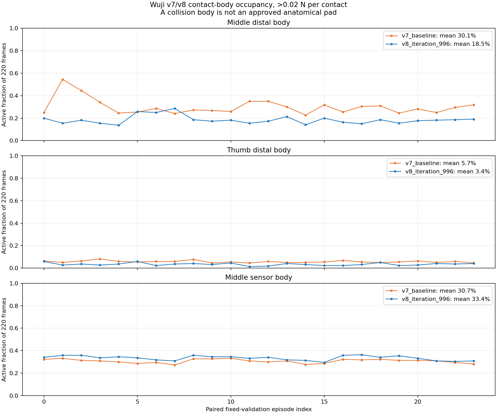
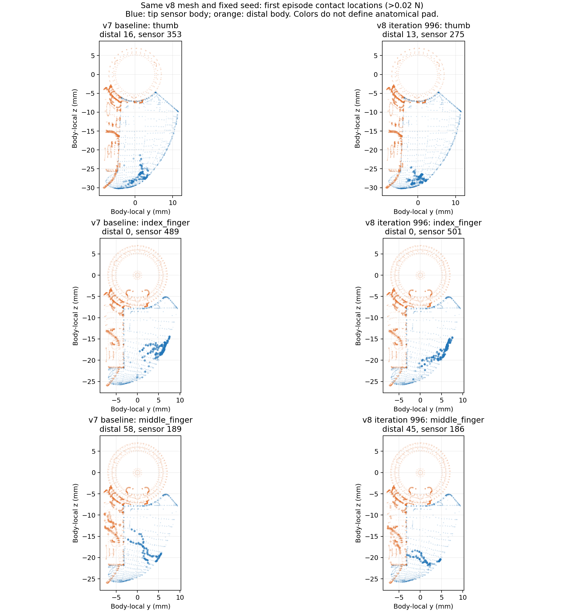
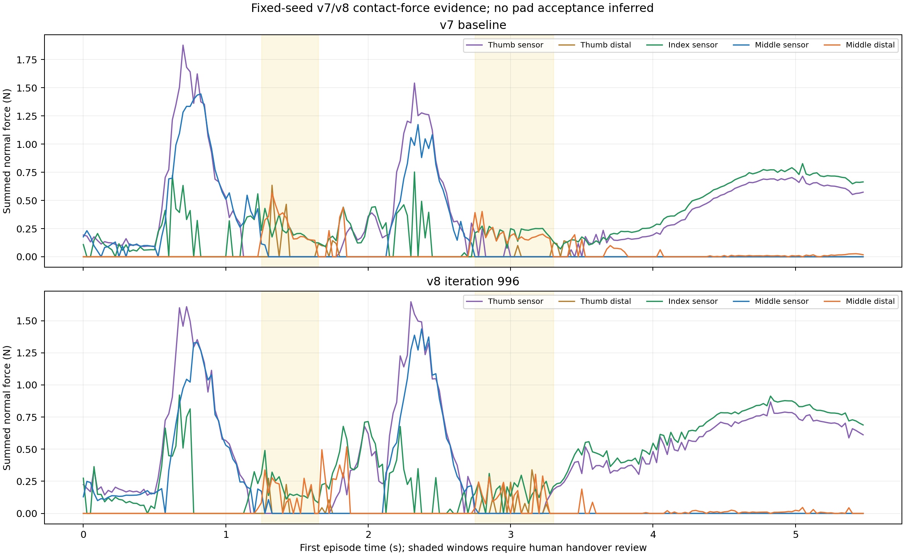

真人参考（已批准示范）
参考
独立参考片段；机器人视频尚未经相位标定，不能视为同步模仿。
同一场景、固定种子下对照 v7 基线与 v8 第 996 轮。24 回合重放与原指标逐回合完全吻合；v8 中指末节承力帧占比由 30.1% 降至 18.5%，但两者在保守接触门槛均为 0/24。图中的颜色是碰撞体，不是获认可的指腹边界；尚未开展 v9 训练。
参考
独立参考片段；机器人视频尚未经相位标定，不能视为同步模仿。
失败
三视角实际 CPU 策略 rollout。v8 sensor-only 严格门槛 0/24；动作自然性待人工判定。
仅诊断
三视角实际 CPU 策略 rollout。5.5 秒 24/24 完成、保守严格门槛 0/24；中指末节仍有承力，真实指腹与交接待人工判定。


